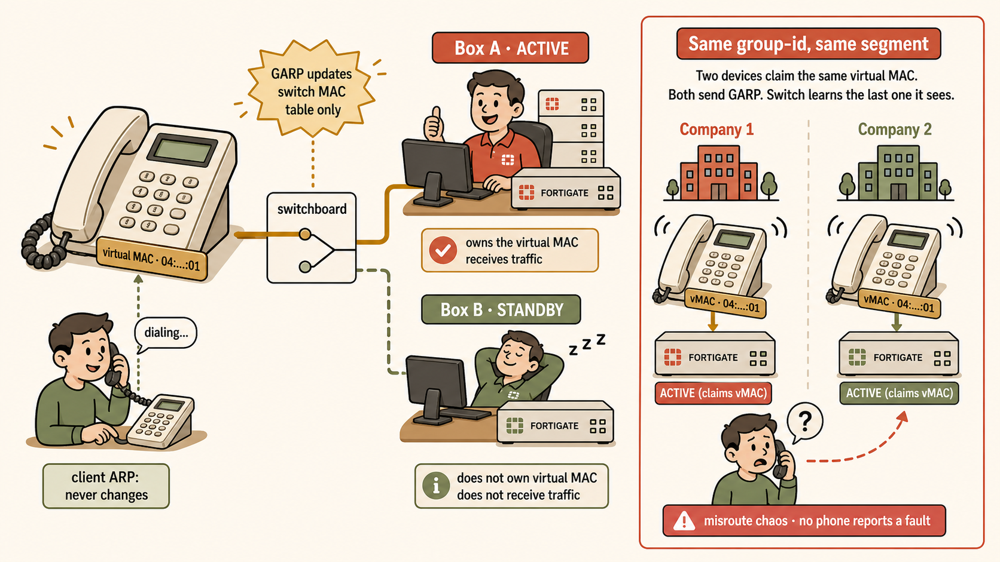

Overview
FGCP A-P puts one member (the primary) in charge of all traffic while the secondary listens to the heartbeat, holds synced config and kernel sessions, and stands ready to inherit the cluster's Layer 2 identity. A failover is three stages — detect (heartbeat silence or a monitored-interface failure), decide (the election waterfall, or a lone self-check if the primary is dead-silent), and hand off identity (adopt virtual MACs, GARP the switches). Each stage has its own defaults, its own knobs, and its own exam trap.
Problem It Solves
One box means every failure — power, link, or software — is a full outage plus cold-spare MTTR. FGCP A-P collapses failure recovery from hours of logistics into seconds of automated identity handoff with live state preserved. But the cluster only protects against failures it can see: heartbeat silence by default, individual link failures only if opted in.
Primary Mental Model
The election is a waterfall, not a number. Criteria are checked in order and the process stops at the first one producing a clear winner:
| # | Override DISABLED (default) | Override ENABLED |
|---|---|---|
| 1 | Most monitored interfaces up | Most monitored interfaces up |
| 2 | HA uptime (needs ≥5-min lead) | Priority |
| 3 | Priority | HA uptime (≥5 min) |
| 4 | Serial number | Serial number |
And the identity belongs to the cluster, not the box: virtual MACs are adopted unchanged by the new primary; GARP re-teaches switches (MAC→port), never clients (IP→MAC).
The Failover Sequence (dead primary)
- Hello packets (EtherType 0x8890/0x8891) stop arriving.
- Default detection: 20 lost × 200 ms ≈ 4 seconds (
hb-lost-threshold×hb-interval). - No election race — the survivor self-checks its own monitored interfaces and declares primary unopposed. Its priority is irrelevant.
- Adopts the identical virtual MAC set (all interfaces except heartbeat + reserved management).
- Broadcasts gratuitous ARPs → switches relearn MAC→port.
- Traffic flows; inherited sessions pay the NP7 resync tax (first packet CPU-punted).
Key Terminology
- Monitored interface — opt-in (
set monitor); feeds criterion #1; failure resets HA uptime to 0. - HA uptime — continuous cluster-membership clock; resets on reboot or monitored-link failure;
diagnose sys ha reset-uptimezeroes it deliberately; inspect withdiagnose sys ha dump-by vcluster. - Override — CLI-only; swaps uptime↔priority; per-member, never synced (as is priority).
- Virtual MAC — default formula inputs: group-id + vcluster ID + physical interface index. group-name is never an input.
- link-failed-signal — old primary drops all interfaces 1 s at failover to flush stubborn switch MAC tables.
- hbdev priorities — ordered, exclusive heartbeat list (higher number = active). Never load-balanced.
session-sync-devIS load-balanced.
Exam-Critical Points
- Short outage (<5 min uptime gap) → uptime is indecisive → falls through to priority → higher-priority box preempts even with override off. Long outage → survivor's uptime lead is decisive → priority never consulted.
- "Box A crashes, Box B has lower priority — does B take over?" Yes, always. No rival = no comparison.
- Override cost: a second failover on every recovery (plus a second NP7 resync).
- group-id does double duty (credential + vMAC math). Two clusters, one L2 segment, same group-id = vMAC collision, no alarm — even with different group-names.
- Symmetric monitored-link failure on both members = no failover.
Common Mistakes
- Assuming FGCP watches links by default — it watches nothing but the heartbeat.
- Confusing 0x8100 (dot1Q VLAN) with 0x8890/0x8891 (HA hellos) — unrelated EtherTypes.
- Thinking GARP refreshes client ARP caches — it refreshes switch MAC tables.
- Believing "override off = no preemption possible" — the fallthrough window says otherwise.
- Assuming two heartbeat links load-balance — they're an ordered failover list.
Troubleshooting Checklist
- Link died, no failover? → check the monitored list first (
show system ha→monitor). - Unexpected failback? → check uptime diff with
dump-by vcluster, then walk the waterfall. - Two clusters, flaky L2? → compare group-ids before anything else.
- Post-failover, old port still receiving? → stubborn switch →
link-failed-signal enable. - Suspected heartbeat issue? →
diagnose sniff packet any "ether proto 0x8890" 4.
The virtual MAC is a company phone number, not a personal one. Customers dial the same number forever (client ARP never changes); when the on-call engineer changes, only the switchboard must learn which desk it now rings at (GARP → switch MAC table). Two companies registering the same number (same group-id, same segment) means callers randomly reach the wrong office — and no phone reports a fault.

Clients dial the number; the switchboard reroutes to whichever desk is on call.
Self-Test
- Override disabled. The primary reboots and returns after 90 seconds, fully healthy, with higher priority. Who is primary and which criterion decided it?
Reveal
The rebooted box. Uptime gap <5 min → indecisive → fallthrough to priority → higher priority wins. Override never mattered.
- Same scenario, but it returns after 6 minutes. Who is primary?
Reveal
The survivor. Its ≥5-minute uptime lead is decisive; the waterfall stops before priority is ever consulted.
- What exactly does the gratuitous ARP correct after failover — and what does it NOT correct?
Reveal
It corrects switch MAC→port tables. It does not (and need not) correct client ARP caches — the IP→virtual-MAC binding never changed.
- Name group-id's two jobs, and group-name's one job.
Reveal
group-id: cluster-membership credential AND input to the default virtual MAC formula. group-name: membership credential only — never computed into anything.
- Default detection time for a dead primary, and the two settings behind it?
Reveal
≈4 seconds: hb-lost-threshold (20) × hb-interval (200 ms). Both tunable — faster detection risks false positives from a busy peer.